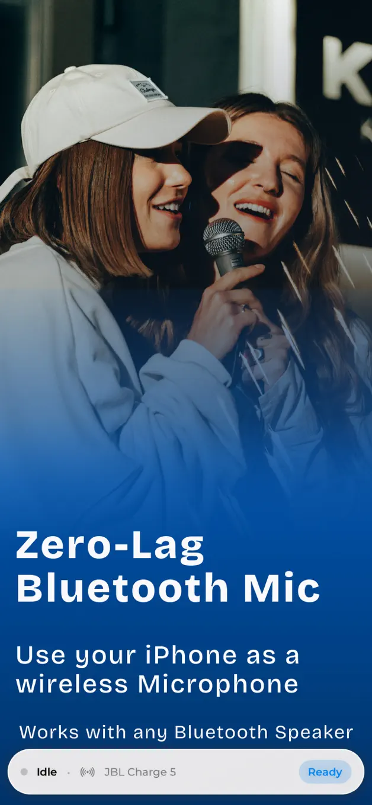
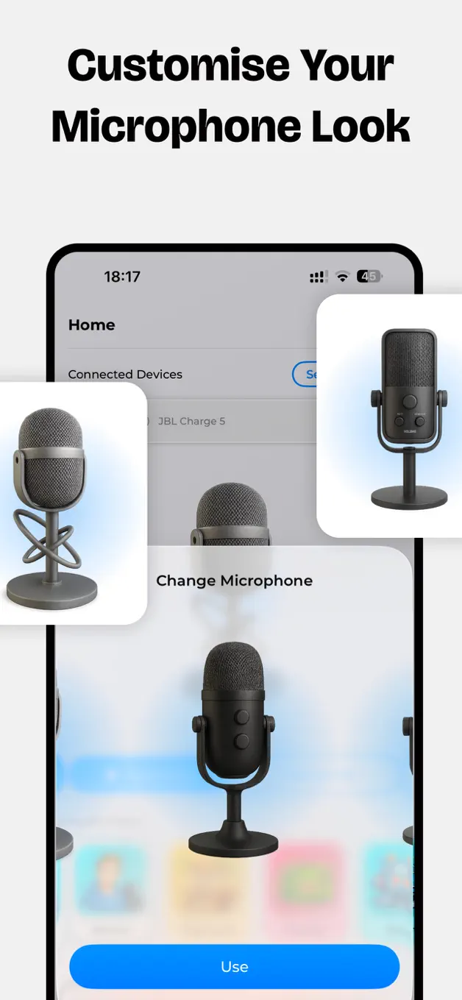
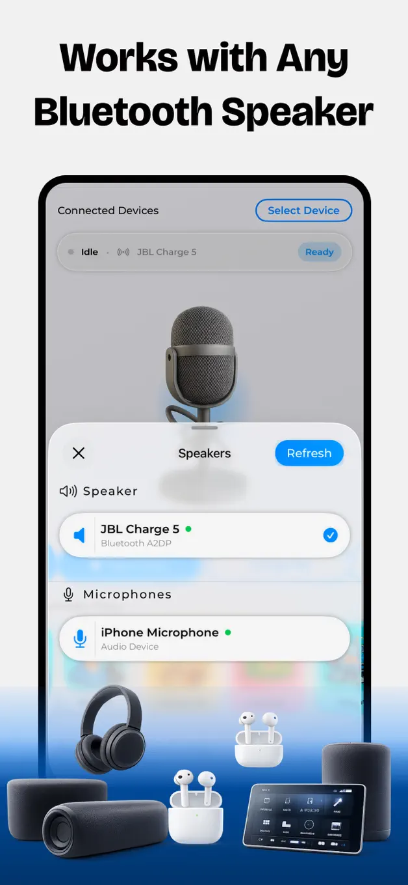
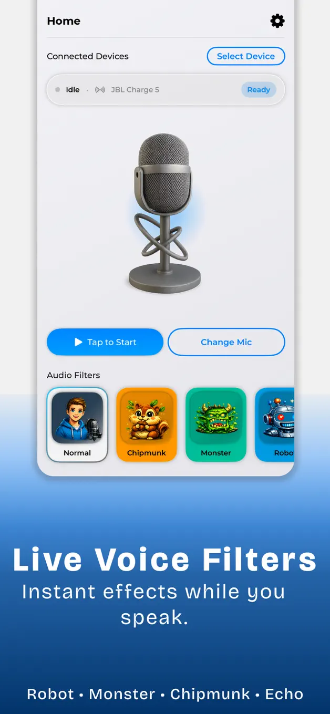

Speak through speakers
Use your iPhone as a live microphone with compatible Bluetooth audio devices.
Bluetooth Microphone & Voice Effects
Connect to a Bluetooth speaker or headphones, speak through your iPhone in real time and shape the sound with voice filters, echo control and custom mic styles.

What BlueMic does
BlueMic turns the device you already carry into a flexible wireless mic for speaking, singing, teaching and creating.
Use your iPhone as a live microphone with compatible Bluetooth audio devices.
Apply pitch, echo, reverb and character effects while you perform or create.
Choose a microphone look and adjust audio controls for the room and moment.
How it works
BlueMic keeps setup simple so you can spend your time on the performance, lesson or announcement.
Pair a compatible Bluetooth speaker or headphones with your device.
Select a microphone style and add the voice effects you want.
Start the mic and adjust the output for your space and equipment.
Inside BlueMic
A clean live-mic workspace for performance, recording and play.



Frequently asked
Pair your speaker or headphones in iOS Bluetooth settings, open BlueMic and select the available audio route.
BlueMic works well for karaoke, lessons, coaching, announcements, presentations, voice-over experiments and creator projects.
Yes. You can use live effects such as pitch shifting, echo and reverb to change the character of your voice.
Latency depends on the iPhone or iPad, the Bluetooth device and the surrounding wireless conditions. Newer hardware generally performs best.
Yes. BlueMic is free to download and offers optional in-app purchases for additional features.
Connect a speaker, choose your sound and turn the iPhone in your hand into a live mic.
Download BlueMic